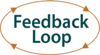

Los días 4 y 5 de Diciembre, la asociación Agile-Spain organiza las Conferencias Agile Spain 2014, que tendrán lugar en el CCCB (Centre de Cultura Contemporània de Barcelona), y para las que ya han iniciado el período de aceptación de charlas y la venta de las primeras entradas. Una cita que más vale no perderse.
Leer más…
Comentarios
...y el número de la cuenta será 512000.
Hecho el obligatorio homenaje a la Santa Granada de Antioquía de los Monty Python, pongámonos serios y veamos por qué dedicamos un artículo a este número.
¿Os iba mal Internet ayer? No estabais solos. En algún momento de la mañana empezaron a haber problemas graves en la mayoría de los ISPs de todo el mundo, que afectaron tanto a empresas como a particulares.
El mundo de la tecnología está lleno de ejemplos de diseños que, o bien por limitaciones del momento, o bien por no imaginar crecimientos exponenciales, provocan problemas de escalabilidad en el futuro; algunos de los más conocidos son el efecto 2000 o el agotamiento de direcciones IPv4. A esta lista de umbrales superados ya podemos añadir uno nuevo: ayer, por primera vez en la historia, se superaron las 512000 entradas en la tabla de rutas de Internet.
No obstante, antes de seguir hablando de dicha tabla necesitamos hablar de cómo está organizado Internet.
Leer más…
Comentarios

La penúltima entrega de Gene Kim, consistente en su segundo patrón favorito, refleja la importancia de la Segunda Vía. El inicio del bucle de retroalimentación, su importancia y algunas veladas sugerencias de cómo conseguirlo, son el contenido principal. Basándose en otro caso real, muestra cómo, implicando a Desarrollo en la atención y resolución de los problemas causados por la introducción de nuevas funcionalidades, se puede reducir la duración de las interrupciones o degradaciones de servicio, mejorando la experiencia de los usuarios finales y de los clientes.
Leer más…

Basado en la filosofía de Python y una sintaxis derivada de C, el lenguaje Go ya conocido por muchos, es una herramienta que se tercia bastante útil en este mundo de escala cada vez mayor. Siendo lo que más destacan sus adeptos su facilidad en la implementación de concurrencia y su portabilidad, cada vez más se va acercando al paisaje de lenguajes mayoritarios. Tanto es así que la gente de dotConferences ha decidido este año organizar una de sus conferencias sobre Go... y, como son así de majos, os pasamos un descuento del 20%. @dotConferences, gracias!
Leer más…
Comentarios
¿WTF? Esas serán probablemente las tres consonantes con las que alguien nos responderá si le empezamos a hablar de NFV. O puede que nos contesten “no tomo drogas, gracias“ si nos acercamos a contarle las bondades del SDN. En realidad, ambos grupos de consonantes son siglas relacionadas con una serie de conceptos en auge en el mundo del networking y muy cercanos a la filosofía DevOps, conceptos sobre los cuales queremos arrojar algo de luz con una serie de artículos que empezamos hoy.
Leer más…
Comentarios